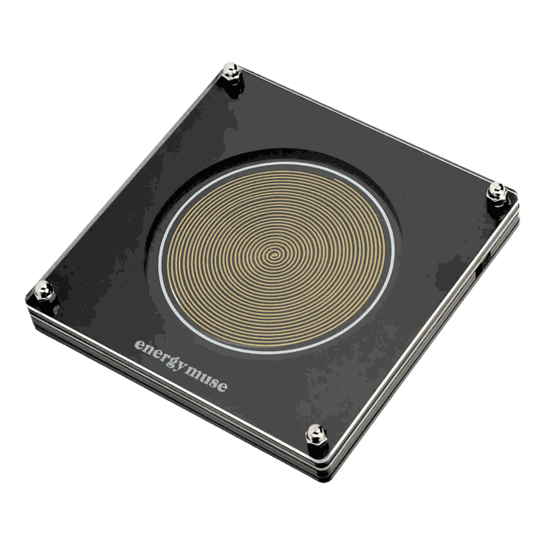
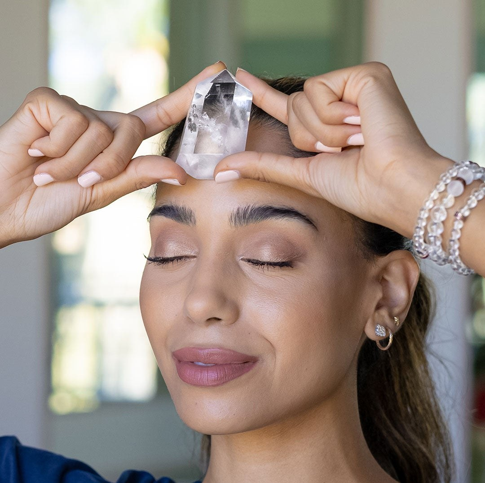

Founder-led for two decades by Heather Askinosie, best-selling author of Crystal 365 and Crystal Muse.
World’s largest collection of fixed-frequency generatorsGuidance before and after you buy
No need to know a crystal by name. Start with the energy you want more of.
Chosen by hand and photographed as it arrives.
Energy Muse frequency generators are where wellness meets tech. These devices are precision-crafted to emit specific frequencies, so you’re always in control of how your space feels.
The world’s most extensive fixed-frequency collection. Not medical devices, and not a substitute for healthcare.


Tell us your focus, your practice style, and what fits your life. In a few minutes, you'll get your energy match: a starting point, a simple practice, and products chosen just for you.

Jewelry can be more than something beautiful. It can be the reminder you reach for before a big moment.
Energy is invisible — which is exactly why it’s so easy to overlook.
But small shifts in your energy can lead to the biggest transformations in your life.
A personal healer in your pocket. Veza is the coming Energy Muse companion — here to help you find your energy match and learn how to use it well.
Early previews and launch access. No noise.I feel noticeably calmer when it’s near me. I keep it in my backpack for classes and clinicals — it’s been a game changer for managing my stress. It helps me feel grounded and present even in high-stress environments.Kaylee
I always have my Protection Necklace in my pocket at work. If I start to feel overwhelmed, I reach in and hold it. There is true power in believing that something is protecting you.Sher McAfee
My Grounding Bracelet has been immensely helpful in helping me attain peace while I took on the great challenge of building a brand-new curriculum this year. Thank you for the inspiration!Shannon Gallagher
A short note on what to work with and why — plus first access to new releases.